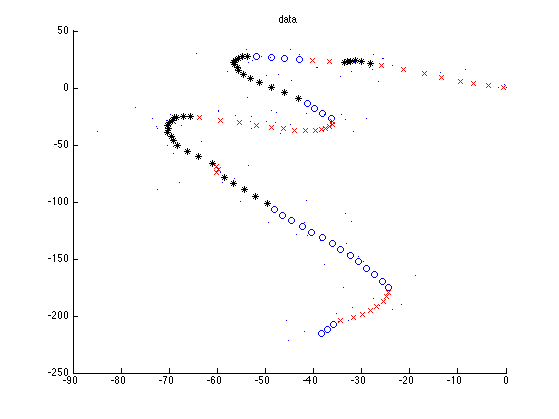
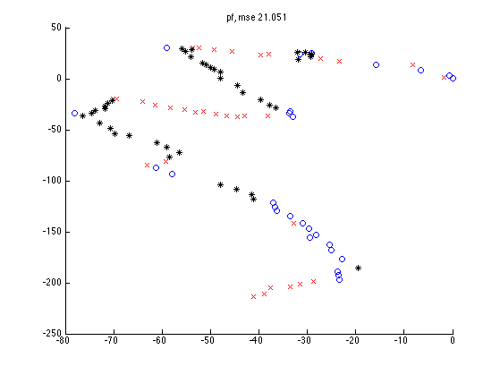
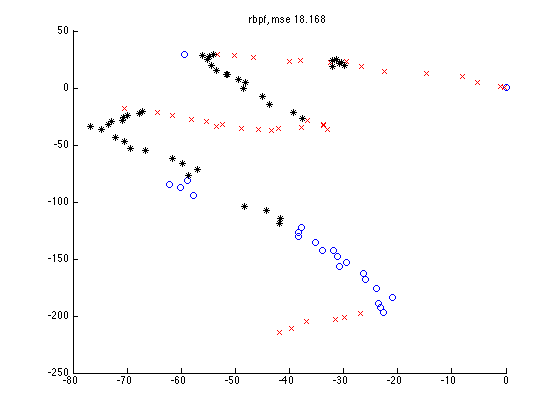
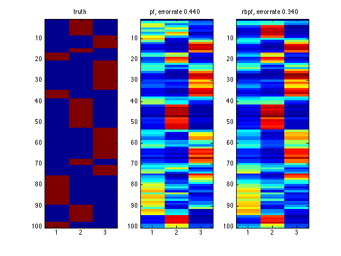
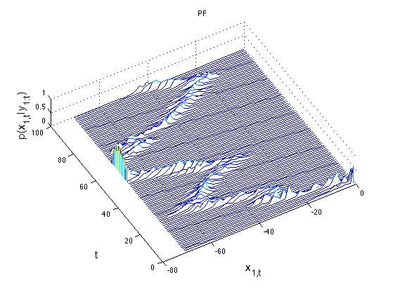
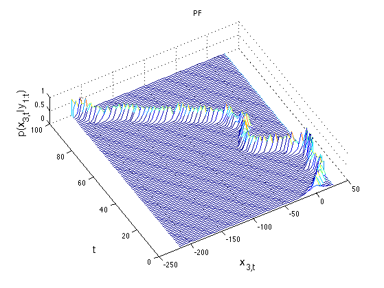

Contents
% Rao-Blackwellised particle filtering for jump Markov linear system % We reproduce example B from Doucet, Gordon, Krishnamurthy % "Particle filers for state estimation of Jump Markov Linear Systems", 2001. % This concerns a target moving in 2d according to 3 different modes % The code was written by Nando de Freitas and Kevin Murphy. clear; echo off; setSeed(0); % =======================================================================
INITIALISATION AND PARAMETERS
=======================================================================
N = 500 ; % Number of particles. T = 100; % Number of time steps. n_x = 4; % Continuous state dimension. n_z = 3; % Number of discrete states. n_y = 4; % Dimension of observations. par.A = zeros(n_x,n_x,n_z); par.B = zeros(n_x,n_x,n_z); par.C = zeros(n_y,n_x,n_z); par.D = zeros(n_y,n_y,n_z); par.E = zeros(n_x,n_x,n_z); par.F = zeros(n_x,1,n_z); par.G = zeros(n_y,1,n_z); TT = 1; % sampling period for i=1:n_z, par.A(:,:,i) = [1 TT 0 0; 0 1 0 0; 0 0 1 TT; 0 0 0 1]; par.C(:,:,i) = eye(n_x); par.B(:,:,i) = 0.2*eye(n_x,n_x); par.D(:,:,i) = 3*diag([2,1,2,1]); % sqrt(3)*diag([20,1,20,1]); %par.F(:,:,i) = 0; par.G(:,:,i) = zeros(n_y,1); end; % input / control vectors par.F(:,1,1) = [0 0 0 0]'; par.F(:,1,2) = [-1.225, -0.35, 1.225, 0.35]'; par.F(:,1,3) = [1.225, 0.35, -1.225, -0.35]'; % Markov chain par.T = [0.9 0.05 0.05; 0.05 0.9 0.05; 0.05 0.05 0.9]; %{ par.T = [0.99 0.005 0.005; 0.005 0.99 0.005; 0.005 0.005 0.99]; %} par.pz0 = [0 1 0]; par.mu0 = zeros(n_x,1); % Initial Gaussian mean. par.S0 = 1*eye(n_x,n_x); % Initial Gaussian covariance.
GENERATE THE DATA
x = zeros(n_x,T); z = zeros(1,T); y = zeros(n_y,T); u = ones(1,T); % Control signals. x(:,1) = par.mu0 + sqrtm(par.S0)*randn(n_x,1); z(1) = length(find(cumsum(par.pz0')<rand))+1; for t=2:T, z(t) = length(find(cumsum(par.T(z(t-1),:)')<rand))+1; x(:,t) = par.A(:,:,z(t))*x(:,t-1) + par.B(:,:,z(t))*randn(n_x,1) + par.F(:,:,z(t))*u(:,t); y(:,t) = par.C(:,:,z(t))*x(:,t) + par.D(:,:,z(t))*randn(n_y,1) + par.G(:,:,z(t))*u(:,t); end; figure; hold on %plot(x(1,:), x(3,:), '-'); plot(y(1,:), y(3,:), '.'); [styles, colors, symbols, str] = plotColors; for k=1:3 ndx=find(z==k); plot(x(1,ndx), x(3,ndx), sprintf('%s%s', colors(k), symbols(k))); end title('data') drawnow printPmtkFigure('rbpfManeuverData')
Estimation
tic; [zest_pf, xest_pf, zamples_pf, xsamples_pf] = pfSlds(N, par, y, u); time_pf = toc tic [zest_rbpf, xest_rbpf, zsamples_rbpf] = rbpfSlds(N, par, y, u); time_rbpf = toc
time_pf = 13.4366 time_rbpf = 24.9440
SUMMARIES AND PLOT
mse_pf = mean((xest_pf(1,:)-x(1,:)).^2) + mean((xest_pf(3,:)-x(3,:)).^2); mse_rbpf = mean((xest_rbpf(1,:)-x(1,:)).^2) + mean((xest_rbpf(3,:)-x(3,:)).^2); [junk,z_max_pf] = max(zest_pf,[],1); figure; hold on for k=1:n_z ndx=find(z_max_pf==k); plot(xest_pf(1,ndx), xest_pf(3,ndx), sprintf('%s%s', colors(k), symbols(k))); end title(sprintf('pf, mse %5.3f', mse_pf)); printPmtkFigure('rbpfManeuverPfTrace') [junk,z_max_rbpf] = max(zest_rbpf,[],1); figure; hold on for k=1:n_z ndx=find(z_max_rbpf==k); plot(xest_rbpf(1,ndx), xest_rbpf(3,ndx), sprintf('%s%s', colors(k), symbols(k))); end title(sprintf('rbpf, mse %5.3f', mse_rbpf)); printPmtkFigure('rbpfManeuverRbpfTrace') %{ figure; plot(1:T,z,'k',1:T,z,'ko',1:T,z_max_rbpf,'r+',1:T,z_max_pf,'bv','linewidth',1); legend('','True state','RBPF MAP estimate','PF MAP estimate'); axis([0 T+1 0.5 n_z+0.5]) %} % Belief state over Z detect_error_pf = sum(z~=z_max_pf)/T; detect_error_rbpf = sum(z~=z_max_rbpf)/T; z_ind = dummyEncoding(z(:), n_z); figure; subplot(1,3,1); imagesc(z_ind); title('truth'); subplot(1,3,2); imagesc(zest_pf'); title(sprintf('pf, error rate %5.3f', detect_error_pf)); subplot(1,3,3); imagesc(zest_rbpf'); title(sprintf('rbpf, error rate %5.3f', detect_error_rbpf)); printPmtkFigure('rbpfManeuverBelZ') fprintf('PF: misclassification rate %5.3f, mse %5.3f, time %5.3f\n', ... detect_error_pf, mse_pf, time_pf); fprintf('RBPF: misclassification rate %5.3f, mse %5.3f, time %5.3f\n', ... detect_error_rbpf, mse_rbpf, time_rbpf); for i=[1 3] figure domain = zeros(N,1); range = zeros(N,1); thex=linspace(min(x(i,:)), max(x(i,:)), 50); hold on ylabel('t','fontsize',15) zlabel(sprintf('p(x_{%d,t}|y_{1:t})', i),'fontsize',15) xlabel(sprintf('x_{%d,t}', i),'fontsize',15) for t=1:1:T, [range,domain]=hist(squeeze(xsamples_pf(i,t,:))',thex); waterfall(domain,t,range/sum(range)) end; view(-30,80); rotate3d on; a=get(gca); set(gca,'ygrid','off'); title('PF') printPmtkFigure(sprintf('rbpfManeuverBelX%d',i)) end
PF: misclassification rate 0.440, mse 21.051, time 13.437 RBPF: misclassification rate 0.340, mse 18.168, time 24.944    